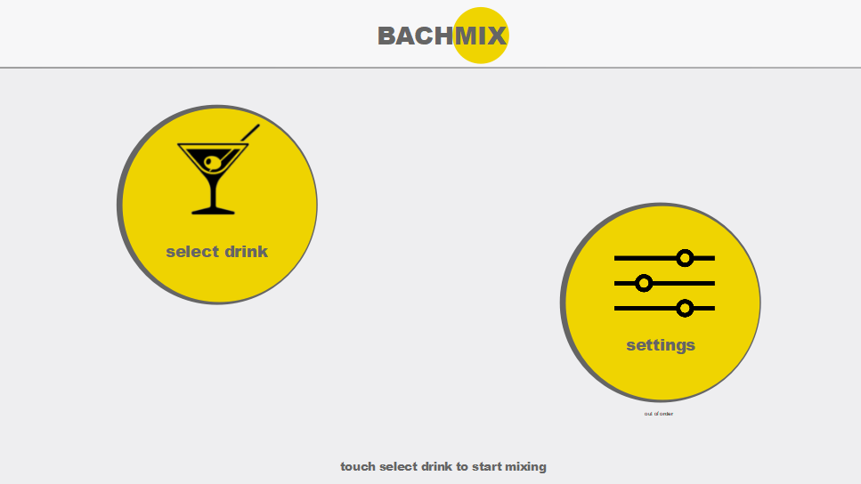

BACHMIX ist ein automatisierter Cocktail/Longdrink-Mixer. Nachdem man über die Visualisierung einen von 12 vorgefertigten Cocktails ausgewählt hat, werden die Drehteller über einen Linearmotor angefahren. Daraufhin drehen sich die Drehteller auf die korrekte Position und ein Taster fährt nach oben, um den Getränkeportionierer zu betätigen. Dies wird sooft wiederholt, bis alle Zutaten des Cocktails im Glas sind. Danach fährt der Linearmotor das Glas wieder zurück auf die Ursprungsposition. Und das Getränk ist zur Entnahme bereit.
